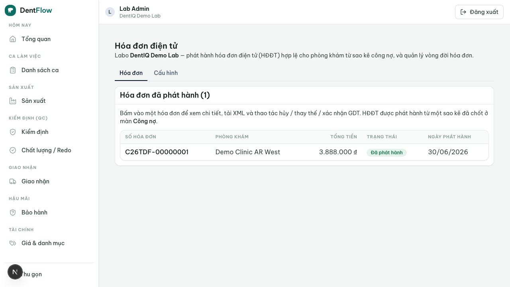
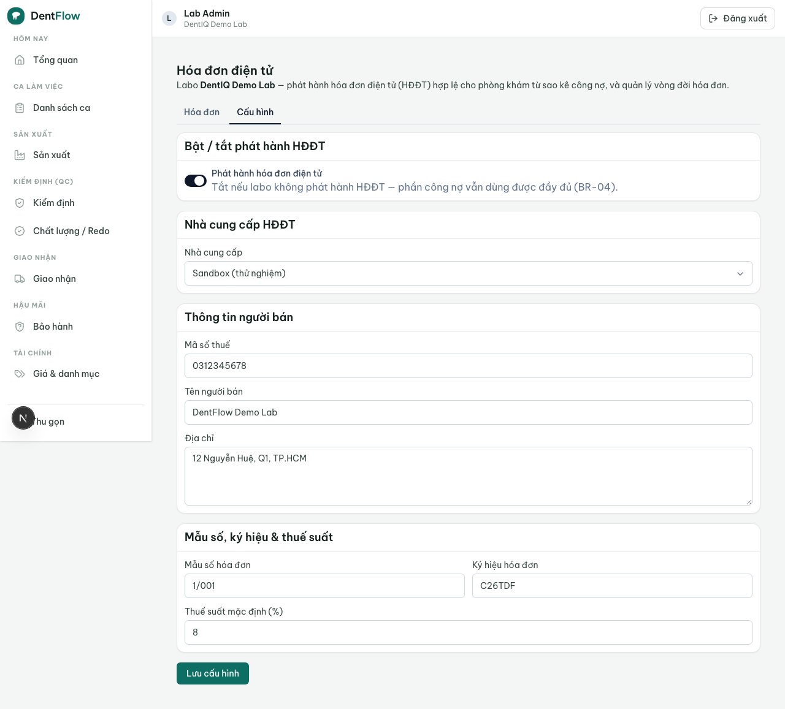

Hoá đơn điện tử
HĐĐT là yêu cầu pháp lý bắt buộc ở VN. Gắn nó vào đúng nguồn công nợ trong DentIQ Lab là điểm khác biệt cụ thể — đối thủ quốc tế (3Shape/DS Core/Dandy) không giải bài toán HĐĐT VN.
Tính năng cho phép labo phát hành hoá đơn điện tử (HĐĐT) hợp lệ cho công nợ với phòng khám — xuất từ một sao kê hoặc từ số dư công nợ — chỉ bằng vài thao tác, qua nhà cung cấp HĐĐT (VNPT/MISA/Viettel). Đây là tái sử dụng module e-invoice của DentIQ, không xây lại từ đầu.

Tuân thủ Nghị định 70/2025
HĐĐT phải tuân thủ Nghị định 123/2020 và Nghị định 70/2025: XML đúng chuẩn, chữ ký số hợp lệ, báo cáo cơ quan thuế (GDT), lưu trữ 10 năm. Không tự chế format — mọi phát hành đi qua nhà cung cấp được công nhận. Báo cáo GDT phải gửi trong ngày phát hành (same-day) theo NĐ 70/2025; nếu báo cáo thất bại, hoá đơn ở trạng thái "chờ xác nhận GDT", không coi là phát hành hoàn tất cho tới khi xác nhận — và không phát hành trùng.
Hỗ trợ đầy đủ vòng đời sau phát hành theo luật: huỷ / điều chỉnh / thay thế hoá đơn, mỗi hành động ghi vết và giữ nguyên bản gốc trong lưu trữ 10 năm. Phát hành nhầm thì dùng huỷ/điều chỉnh/thay thế, không xoá cứng (vi phạm lưu trữ 10 năm).
Tạo XML + ký số qua gateway
Từ một sao kê đã chốt, hệ thống dựng dữ liệu hoá đơn: người bán = labo, người mua = phòng khám, dòng hàng theo unit, thuế suất per-line (per-line VAT) lấy từ cấu hình labo. Sau đó gọi adapter nhà cung cấp → ký số → phát hành → nhận mã + XML hợp lệ → báo cáo GDT same-day. Đơn vị tiền là VND.
Thông tin người mua (phòng khám) — mã số thuế, tên, địa chỉ — bắt buộc đầy đủ trước khi phát hành. Người mua sai/thiếu mã số thuế → chặn phát hành, yêu cầu bổ sung hồ sơ phòng khám. Nếu nhà cung cấp down/timeout khi phát hành, hệ thống không tạo hoá đơn "nửa vời"; cho thử lại, không trùng số.

Gắn với chu kỳ công nợ
Phát hành HĐĐT là một bước trong chu kỳ công nợ lab (workflow sở hữu vòng đời sao kê → công nợ → thu tiền). Feature này chỉ sở hữu hành động phát hành + cấu hình + bật/tắt; thứ tự kỳ và đối soát thuộc về workflow đó. Labo là bên phát hành hoá đơn cho phòng khám; để tránh xuất hoá đơn hai lần với DentIQ phía phòng khám, mặc định chỉ labo phát hành, và một sao kê kỳ chỉ phát hành HĐĐT một lần.

Tính năng có thể tắt ở cấp labo. Labo không phát hành HĐĐT vẫn dùng được toàn bộ phần còn lại của DentIQ Lab — không có HĐĐT là một mặc định hợp lệ. Khi tắt hoặc khi nhà cung cấp chưa cấu hình, hệ thống không chặn quản công nợ; chỉ ẩn/khoá hành động phát hành và nêu rõ trạng thái.